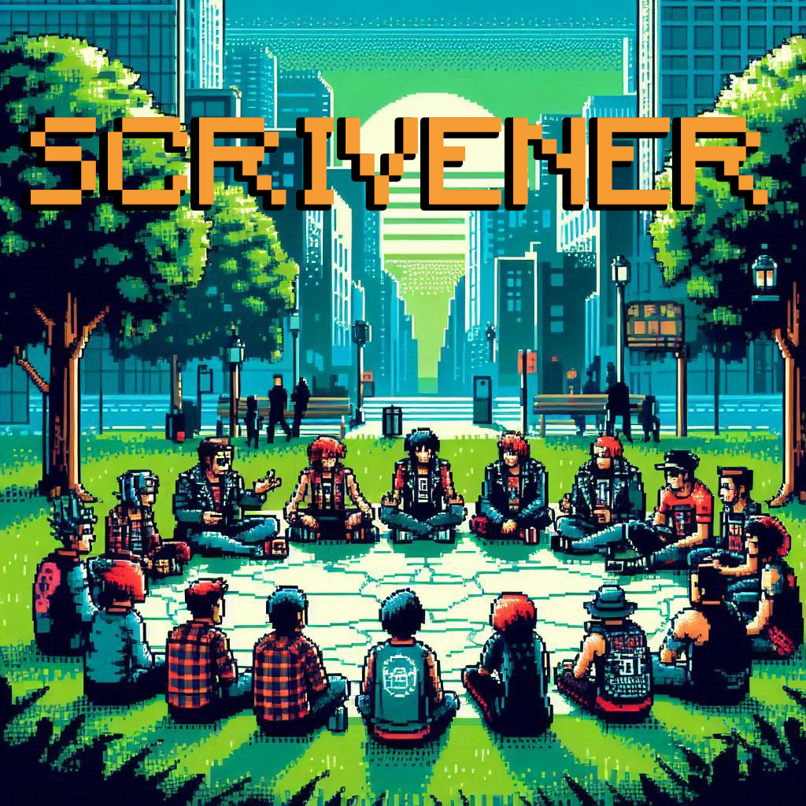

Scrivener is a text-based role-playing game developed as part of The Creepin’ Illiberalist Curriculum by Weird Economies. Combining the mechanics of Dungeons & Dragons (DnD), the governance principles of Decentralized Autonomous Organizations (DAOs), and the capabilities of AI-driven storytelling, Scrivener invites participants to co-create a future of resistance and solidarity in a near-future world shaped by the dominance of illiberalist power.
Played entirely on Discord, Scrivener immerses players into a narrative where the last remnants of the left have banded together to form a DAO, a horizontal governance model with shared financial resources. As factions with unique political frameworks, players must collaborate, propose ideas, and respond to crises to envision and build a new world order. The game is dynamic and non-linear—each choice impacts the evolving story, which is co-authored in real-time by the players and a custom AI storyteller.
Key Features:
Goals of Scrivener:
Scrivener seeks to create a participatory, immersive experience that blends critical thinking with creative collaboration. By weaving together gaming mechanics, speculative futures, and political theory, the project challenges players to respond to crises, imagine alternatives, and engage in collective storytelling. The game is both a provocation and a tool for rethinking systems of governance, resistance, and world-building in an increasingly unstable future.
Scrivener is more than a game—it is a speculative playground where imagination and action intersect, offering participants a platform to critically and creatively navigate the complexities of the modern world.
{kind=link}
{kind=link}